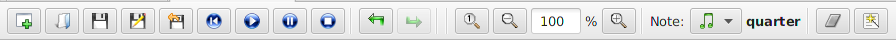
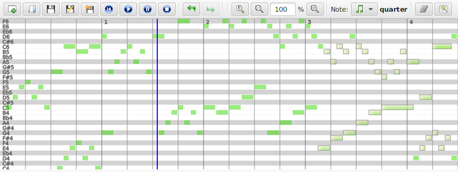

MirMidi
An introduction to the MIDI sequencer.
Component overview
The window provides 5 main components that are listed below:
- Piano roll editor
- Controller editor
- Instruments editor
- Tempo editor
- Midi events table

The top menu bar
On the top menu you can find actions related to File/Sequence management (load, save, new sequence, undo/redo, zooming, ect.), MIDI playback and notes interations (MIDI NOTE_ON/NOTE_OFF events).
The piano roll panel
In this portion of the layout every note is rendered as a rectangle with a different color for every channel. In Edit mode you can insert, remove, move and manipulate notes. Other neat features are the quantization and humanization actions that operate on the duration of selected notes.
The middle menu bar
The menu in the middle of the screen is very important since contains actions related to all the components. For example here it is possible to select the current Track or Channel, mute some tracks during the playback, choose the current Mode (i.e. Select, Edit, Playback), delete the selected evetns and open the raw list (actually a table) of MIDI events currently selected.
The controller panel
The Controllers editor is probably the most important component of MirMidi. Within the panel you can insert/edit Control Changes (CCs) events. This kind of events are important in practice for the believability of the playback performance of the sequence. Some events are in the range 0-127 and so you can shape their progress drawing straight lines or polynomial curves (for example the Volume CC). For others you can switch them ON/OFF through time (for example the Sustain Pedal CC).
The instruments panel
In this panel you can select the current MIDI Instrument for every channel and so insert/edit Program Change events by just clicking inside every channel rectangular area.
The tempo panel
This is the panel where you can control the current tempo (so the speed of execution) of the entire sequence. When in Edit mode every click set a new tempo event on the sequence.